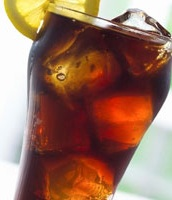
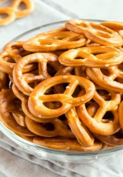
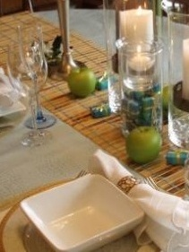

مع ارتفاع درجة الحرارة وكثرة عدد ساعات الصيام، يحتاج الجسم للكثير من السوائل عقب الإفطار، ولذلك تقدم الشيف إلهام فتحى عضوة جمعية الطهاة المصريين، مجموعة من الوصفات لمشروبات رمضانية يمكن لربة المنزل أن تحضرها فى المنزل لضمان جودتها وسلامتها، وعلى سبيل الاقتصاد والتوفير كذلك....
وتقدم الشيف إلهام بعض الطرق لتحضير عدد من المشروبات الرمضانية ذات الفائدة الغذائية والتى ترطب الحلق وتمنح الجسم ما يحتاجه من سوائل:-:
- طريقة تحضير عصير الخشاف
- طريقة تحضير عصير الخروب
- طريقة عمل عصير الدوم
- طريقة تحضير عصير الجزر
لمعرفة المزيد عن الوصفات
طرق تحضير المشروبات الرمضانية فى المنزل.. وصفات سهلة لعمل عصير الدوم والخشاف والخروب والجزر
مقادير مقرمشات مالحة
كوب (150 جم) دقيق ⅓ كوب (80 مل) ماء دافئ ½ ملعقة صغيرة (2.5 جم) سكر ½ ملعقة صغيرة (2.5 جم) خميرة فورية ¼ ملعقة صغيرة (1.25 جم) ملح 2 ملعقة كبيرة (30 مل) زيت 2 كوب (500 مل) ماء ملعقة كبيرة (15 جم) بيكربونات الصودا زبد ذائب للدهن
طريقة تحضير مقرمشات مالحة
ني الفرن عند درجة حرارة 180 درجة مئوية. في وعاء صغير، ضعي الماء الدافئ والخميرة والسكر، وقلبي جيدًا، ثم اتركيه في مكان دافئ لمدة 5 دقائق. في وعاء كبير، ضعي الدقيق والملح، ثم أضيفي خليط الخميرة، واعجني بيديكِ حتى تحصلي على عجينة طرية ومتماسكة. إذا احتجت المزيد من الماء الدافئ، يمكنكِ إضافته حتى تحصلي على العجينة. ادهني العجين من جميع الجهات بالزيت، ثم غطي الوعاء بفوطة نظيفة، واتركيها لمدة ساعة في مكان دافئ. قطعي العجين إلى كرات صغيرة، ثم شكلي الكرات على شكل خيوط طويلة رفيعة. قطعي هذه الخيوط إلى عيدان متساوية الحجم صغيرة الحجم، ثم رصي نصفها في صينية مغطاة بورق الزبدة. اثني طرفي باقي العيدان إلى داخل، وثبتي الطرفين في منتصف العود، ثم رصيها في صينية مغطاة بورق الزبدة. على نار متوسطة، سخني 2 كوب الماء، واتركيه حتى يغلي، ثم أضيفي بيكربونات الصودا، وقلبي حتى تذوب. أضيفي القليل من المقرمشات إلى الماء، واتركيها لمدة 20 ثانية حتى تطفو، ثم ارفعيها من الماء، ورصيها في الصينية المغطاة بورق الزبدة. كرري هذه الخطوة حتى تنتهي من جميع المقرمشات. ادهني المقرمشات بالزبدة الذائبة، ثم رشي القليل من الملح الخشن فوقها. ضعي الصينية في الفرن لمدة 40 دقيقة، حتى يُصبح لونها ذهبيًّا، وتصبح مقرمشة. أخرجيها من الفرن، واتركيها تبرد تمامًا. يظهر تحت اسم الوصفة 5 نجوم، لا تنسي أن تضعي تقييمكِ للوصفة....
مبالصور: 7 وصفات جديدة للفشار
طريقة عمل مقرمشات مالحة
الترتيب الأساسي لسفرة الطعام
يمكن ترتيب سفرة الطّعام من خلال اتّباع ما يأتي:[١] يبدأ ترتيب السفرة بوضع غطاء الطّاولة. يوضع الطّبق الرّئيسي في منتصف الطّاولة. توضع السّكين على يمين الطّبق، بحيث يكون نصلها موجّهاً نحو الطّبق. توضع الملعقة على يمين السّكين، مع مراعاة أن يكون قاعها ملامساً للطاولة. يوضع منديل على يسار الطّبق، وتوضع فوقه الشّوكة. يوضع الكوب الزجاجي أعلى الطّبق، بحيث يكون في موضع الساعة الواحدة.
الترتيب الرسمي لسفرة الطعام
يُطبّق الترتيب الرسمي لسفرة الطّعام من خلال ما يأتي:[٢] يوضع طبق الخبز في أعلى يسار الطّبق الرّئيسي، وتوضع سكّين الزبدة عليه بحيث يكون مقبضها في وضعيّة تتيح الوصول السّهل إليه. توضع الملعقة والسّكين الخاصّتان بالحلوى أعلى الطّبق الرّئيسي، بحيث يكون مقبض السّكين موجّهاً لليسار، ومقبض الملعقة موجّهاً لليمين. تُرتّب الملاعق والسّكاكين والشوك تبعاً لترتيب الاستخدام، وذلك بالاتّجاه من الخارج نحو الدّاخل، مع مراعاة وضع الملاعق والشّوك على يمين الطّبق، ووضع السّكاكين على يسار الطّبق مع توجيه شفراتها للدّاخل. يوضع الكأس المخصّص للماء فوق السّكاكين، وتُرتّب كؤوس المشروبات الأخرى على يمين كأس الماء بحيث يتمّ البدء من المشروب الذي سيتمّ تناوله أولاً ويتبعه ما يليه.
لمعرفة المزيد من الوصفة
نصائح ترتيب سفرة الطعام
-

-

-
